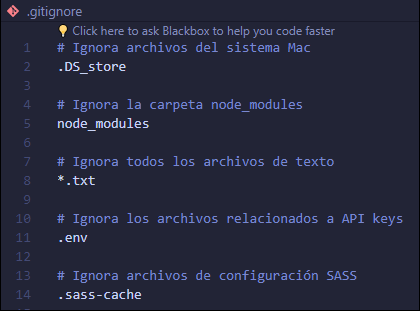

Git es un software de control de versiones diseñado por Linus Torvalds, pensando en la eficiencia, la confiabilidad y compatibilidad del mantenimiento de versiones de aplicaciones cuando estas tienen un gran número de archivos de código fuente. Su propósito es llevar registro de los cambios en archivos de computadora incluyendo coordinar el trabajo que varias personas realizan sobre archivos compartidos en un repositorio de código.
Al principio, Git se pensó como un motor de bajo nivel sobre el cual otros pudieran escribir la interfaz de usuario o front end como Cogito o StGIT. Sin embargo, Git se ha convertido desde entonces en un sistema de control de versiones con funcionalidad plena. Hay algunos proyectos de mucha relevancia que ya usan Git, en particular, el grupo de programación del núcleo Linux.

Los proyectos vinculados a Git, serán un repositorio.
Tenemos nuestro directorio local (una carpeta en nuestro pc) con muchos archivos, Git nos irá registrando los cambios de archivos o códigos cuando nosotros le indiquemos, así podremos viajar en el tiempo retrocediendo cambios o restaurando versiones de código, ya sea en Local o de forma Remota (servidor externo). En la práctica quedará más claro.
Es una plataforma de desarrollo colaborativo que aloja proyectos en la nube utilizando el sistema de control de versiones llamado Git. Ayuda a los desarrolladores a almacenar y administrar el código llevando un registro de cambios. Generalmente el código es abierto, lo que permite realizar proyectos compartidos y mantener el seguimiento detallado de su progreso. Además cuenta con una herramienta muy útil que es GitHub Pages donde podemos publicar nuestros proyectos estáticos (HTML, CSS y JS) gratis.
Aprenderemos los primeros comandos de git, todos los comandos que veremos a contunuación, tienen que ejecutarse en la terminal (ejemplo: terminal de VSCode).
Para ver que versión de git estamos utilizando, agregamos el siguiente comando:
git version
git help
Muestra una lista de comandos comunes de git, que se usan en diversas situaciones.
Cuando tenemos mucho código en la terminal, podemos limpiarla con el siguiente comando:
cls
Para crear un nuevo repositorio, crear la carpeta oculta .git .
git init
Inicializa un nuevo repositorio de Git. Este es el primer comando que debes aprender. Puede utilizarse para convertir un proyecto existente y sin versión en un repositorio de Git, o para inicializar un nuevo repositorio vacío.
La mayoría de los demás comandos de Git no se encuentran disponibles fuera de un repositorio inicializado, por lo que este suele ser el primer comando que se ejecuta en un proyecto nuevo. Al ejecutar git init, se crea un subdirectorio de .git en el directorio de trabajo actual, que contiene todos los metadatos de Git necesarios para el nuevo repositorio. Estos metadatos incluyen subdirectorios de objetos, referencias y archivos de plantilla. También se genera un archivo HEAD que apunta a la confirmación actualmente extraída. Solo se ejecuta una sola vez por proyecto.
git status
Muestra el estado del directorio en el que estás trabajando y la instantánea preparada.
Usualmente se utiliza con la bandera -s, esto mostrara los archivos que tenemos en la carpeta en la cual estamos trabajando.
git status -s
El comando git add añade un cambio del directorio de trabajo en el entorno de ensayo. De este modo, indica a Git que quieres incluir actualizaciones en un archivo concreto en la próxima confirmación. Sin embargo, git add no afecta al repositorio de manera significativa: en realidad, los cambios no se registran hasta que ejecutas git commit.
Para añadir todos los archivos al mismo tiempo se utiliza:
git add .
Siempre se debe incluir un espacio después de add y al final un punto.
También se puede utilizar add para añadir, uno o varios archivos a la vez.
git add nombrearchivo1.txt nombrearchivo2.txt
git commit
El comando git commit captura una instantánea de los cambios preparados en ese momento del proyecto. Las instantáneas confirmadas pueden considerarse como versiones "seguras" de un proyecto: Git no las cambiará nunca a no ser que se lo pidas expresamente. Antes de ejecutar git commit, se utiliza el comando git add para pasar o "preparar" los cambios en el proyecto que se almacenarán en una confirmación. Estos dos comandos, git commit y git add, son dos de los que se utilizan más frecuentemente.
git commit utiliza la bandera -m. Un comando de atajo que crea inmediatamente una confirmación con un mensaje de confirmación usado. De manera predeterminada, git commit abrirá el editor de texto configurado localmente y solicitará que se introduzca un mensaje de confirmación. Si se usa la opción -m, se omitirá la solicitud de editor de texto a favor de un mensaje insertado.
git commit -m
git log
El comando git log muestra las instantáneas confirmadas. Te permite ver el historial del proyecto, filtrarlo y buscar cambios concretos. Mientras que git status te permite examinar el directorio de trabajo y el entorno de ensayo, git log solo muestra el historial confirmado.
Es muy útil lanzar el log en una sola línea, lo que permite que veamos más cantidad de commits en la pantalla y facilita mucho seguir la secuencia, en vez de tener que ver un montón de páginas de commits. Para ello usamos:
git log --oneline
Para crear un repositorio en GitHub, nos tenemos que ubicar en la imagen del signo + que nos aparece en GitHub y luego seleccionar New repository.

Luego, tenemos que asignar un nombre al repositorio (tratar de no dejar espacios en el nombre), elegimos si será Publico o Privado y luego presionamos Create repository.

A continuación, elegimos or push an existing repository from the command line (o enviar un repositorio existente desde la línea de commando), y copiamos las líneas de comando que nos aparecen, una por una, algo muy importante es cambiar el main por master si es necesario.

Al ejecutar estas líneas de comando te pedirá el usuario y contraseña de tu cuenta de github.
git remote te permite ver todos los repositorios remotos. El siguiente comando listará todas las conexiones junto con sus URLs:
git remote -v
git push
El comando git push se usa para cargar contenido del repositorio local a un repositorio remoto. El envío es la forma de transferir confirmaciones desde tu repositorio local a un repositorio remoto. Es el equivalente a git fetch, pero mientras que al recuperar se importan las confirmaciones a ramas locales, al enviar estas se exportan a ramas remotas. Las ramas remotas se configuran mediante el comando git remote. Los envíos pueden sobrescribir los cambios, por lo que se debe tener cuidado a la hora de realizarlos.
Después de hacer todo esto, para futuros cambios y subir los registros a GitHub debemos ejecutar los siguientes comandos en el orden en que se indican:
git add
git commit -m "mensaje"
git push
git config
El comando git config es una función útil que sirve para definir valores de configuración de Git a nivel de un proyecto global o local. Estos niveles de configuración se corresponden con archivos de texto .gitconfig. Al ejecutar git config, se modificará un archivo de texto de onfiguración.
El caso práctico más básico de git config es invocarlo con un nombre de configuración y un email, que mostrará el valor definido con ese nombre y con ese email.
git config --global user.name "nombeusuario" : configura el nombre del usuario del equipo.
git config --global user.email "tuemail@ejemplo.cl" : configura el email del usuario del equipo en el cual se esta trabajando.
Para el email, es recomendable utilizar el email de GitHub.
La bandera --global: La configuración de nivel global es específica del usuario, lo que significa que se aplica al usuario de un sistema operativo. Los valores de configuración globales se almacenan en un archivo que se encuentra en el directorio principal de un usuario. C:\Usuarios\\.gitconfig en Windows.
git clone
git clone es un comando para descargarte el código fuente existente desde un repositorio remoto (como Github, por ejemplo). En otras palabras, Git clone básicamente realiza una copia idéntica de la última versión de un proyecto en un repositorio y la guarda en tu ordenador. Ejemplo :
git clone <https://link-con-nombre-del-repositorio>

GitHub Pages es un servicio de alojamiento u hospedaje web gratuito de GitHub. Este servicio nos permite alojar páginas web estáticas.
Cabe señalar que las páginas estáticas son, en su mayoría de información haciendo uso de HTML, CSS y Javascript. Es decir, las páginas web dinámicas que tengan los lenguajes de programación (PHP, Java, Python, entre otros) y bases de datos (MySql, Sql Server, MongoDb, etc.), no se ejecutaran.
Se debes tener en cuenta que necesitas tener tu repositorio ya creado en tu perfil de GitHub y como Publico no como Privado. Si se tiene el repositorio como privado, no se podrá utilizar giuthub pages ya que github solo permite usar pages solo con repositorios públicos.
Primero, seleccionamos nuestros repositorios (Your repositories), luego seleccionamos el repositorio, el cual queremos subir.

Ya elegido el repositorio, vamos a seleccionar Settings y luego Pages.

Luego en donde dice None, elegimos si estamos en Master o en Main. Y luego le damos clic a Save.

.gitignore, es un archivo de texto que le indica a Git que archivos o carpetas ignorar en un proyecto.
Un archivo local .gitignore generalmente se coloca en el directorio raíz de un proyecto. También puedes crear un archivo global .gitignore, y cualquier entrada en ese archivo se ignorará en todos tus repositorios de Git.
Para crear un archivo .gitignore local, crea un archivo de texto y asígnale el nombre ".gitignore" (recuerda incluir el . al principio). Luego, edita este archivo según sea necesario. Cada nueva línea debe incluir un archivo o carpeta adicional que quieras que Git lo ignore.
Las entradas de este archivo también pueden seguir un patrón coincidente:
ejemplo de cómo puede lucir el archivo .gitignore :
